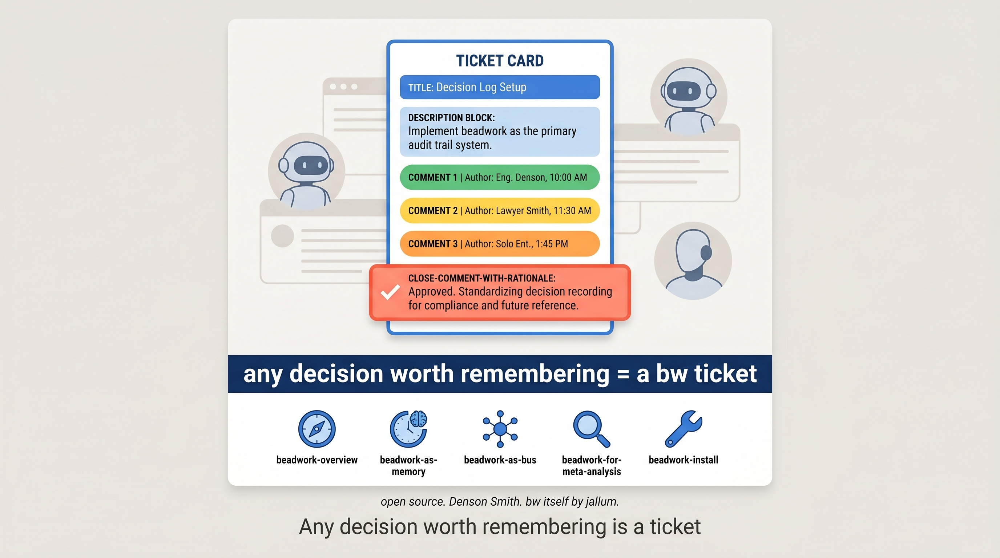

The pattern, in one sentence: any decision worth remembering is a candidate for a bw ticket. The "ticket" shape is just structured-enough notes-to-future-self with the rationale preserved.

Any decision worth remembering is a ticket.
You don't need a separate decision-log tool, an ADR repository, a privilege-log app, or accounting software. bw was always this; you just use it for decisions deliberately. Future-you (or future-anyone) reads bw show and gets the why.
beadwork-overview — the seven-persona tour.beadwork-as-memory — durability across sessions.beadwork-as-bus — multi-agent communication.beadwork-for-meta-analysis — an agent reading other agents' work.beadwork-for-decisions — decision logs / audit trails. ← you are herebeadwork-install — drive the install end-to-end.Open source, MIT-licensed.
bw itself is jallum's project at github.com/jallum/beadwork.